Algunos de los momentos que hacen de nuestra historia algo especial...
porque cada risa compartida, cada beso, cada abrazo y cada día
a tu lado se convirtió en mis recuerdos favoritos.
18 de octubre, 2025
El día empezo todo
Bueno para especificar nuestra historia comenzó un 15 de junio cuando me hablaste despues de 5 años
aunque tenias un poco de verguenza tomaste el valor de hacerlo, te puedo admitir que responderte fue la mejor decisión que pude haber tomado, no me arrepiento ni un segundo,
cada dia hablando contigo y volviendote a conocer fue
hermoso, la quimica que tuvimos desde el inicio no la puedo explicar solo se que se sentia
tan real y muy especial.Asi fueron pasando los dias , dias en los que le delvoviste el brillo a mis ojos y nose tu pero yo desde ese instante
estaba segura que queria volver a dejarte ir.
Aunque se que tu plan no era pedirmelo por videollamada un 18/10 lo hiciste y no dude ni un segundo en decirte que si.
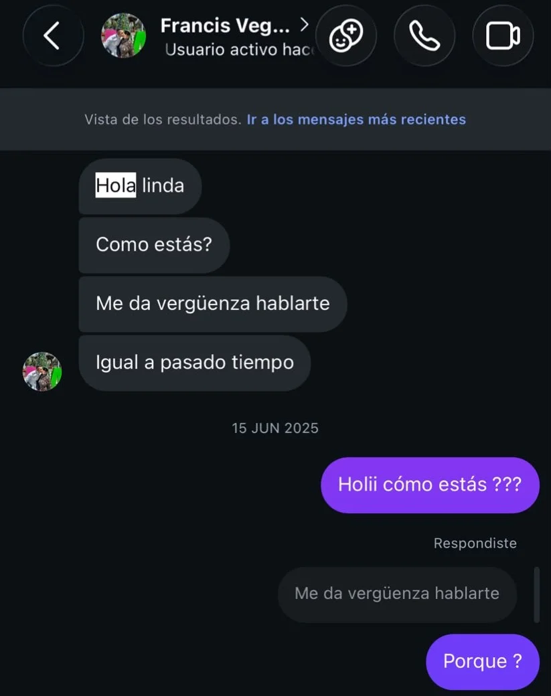
Videollamadas
Cada videollamada nocturna
Me fascinaba —y me sigue fascinando— cada videollamada nocturna a tu lado. Amo cuando nos quedamos conversando de
todo un poco: historias, chistes y esas ocurrencias que siempre logran sacarme una sonrisa. Cada detalle me permite
conocerte un poquito más y confirmar lo increíble que eres, mi vida hermosa, aunque a veces tú no te des cuenta de ello.
En muchas otras ocasiones no hablábamos mucho, pero aun así es y sigue siendo la mejor parte
de mi día: Es el instante en que la distancia se desvanece y te siento bien cerquita de mi corazón. Te amo con el alma.
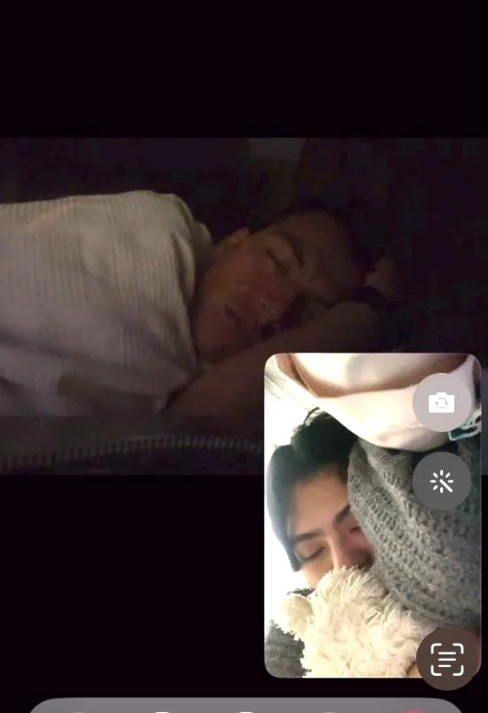
Dias dificles
Cuando mas nos extrañabamos
Sé que hubo varios momentos difíciles, días en los que hablábamos de lo mucho que nos extrañábamos.
A pesar de no habernos visto en 5 años, era una sensación extraña pero profundamente genuina. Había otras
veces en las que la distancia dolía demasiado, donde lo único que deseábamos era estar el uno al lado del otro.
También hubo ocasiones en las que el miedo o las inseguridades tomaban el protagonismo... pero nada de eso logró
vencer este amor tan real que nos tenemos. Bastaba escucharnos decir que juntos podemos con todo, que siendo un
equipo todo va a estar bien.Sé que no fue nada fácil y no es nada fácil aun, pero te agradezco de todo corazón por no rendirte, amor de mi vida.
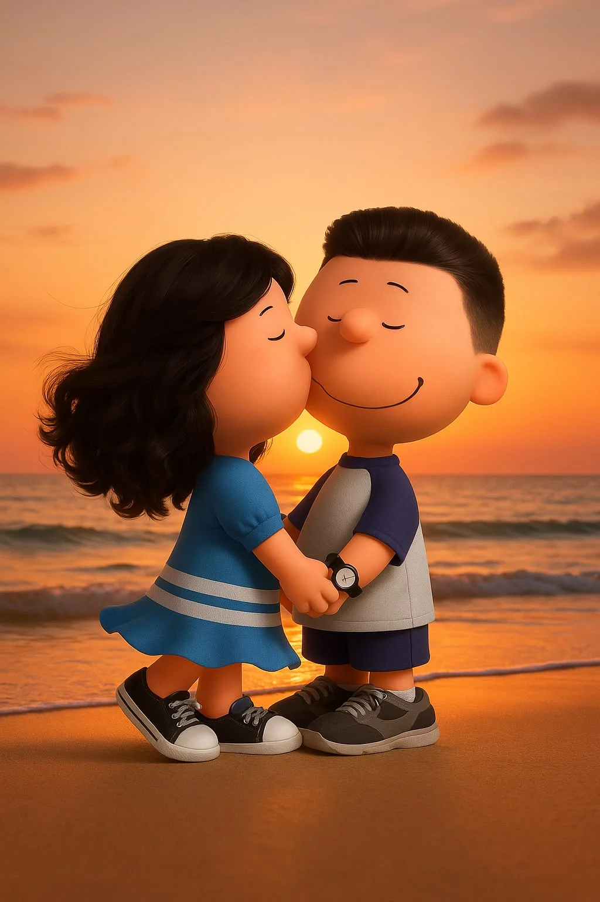
Reencuentro
Nuestra primera cita
Me parece increíble que justamente en ese año iba a viajar a Perú, después de dos años de no haber ido, pero esta vez
le tengo que dar toda la razón al dicho: 'Las cosas pasan por algo'. Justo fue en ese año que volvimos a hablar. Recuerdo
llegar un 2 de diciembre con una mezcla gigante de emociones: por un lado moría por verte, y por el otro tenía ese miedito
de que las cosas no eran como las imaginaba.Tuvimos que esperar hasta el fin de semana a que salieras de la escuela.
Esa noche que me dijiste que vendrías a verme no me lo podía creer. Verte después de tanto tiempo me puso supernerviosa,
no te voy a mentir, pero amé tu forma tan espontánea de darme los toffees (jaja), ese primer abrazo que nos dimos y el beso
que me robaste fue todo lo que necesite para saber que eras tú. Tuvimos nuevamente esa química instantánea, como si nunca
nos hubiéramos separado... y fue justo ahí cuando empezó el mejor verano de mi vida.
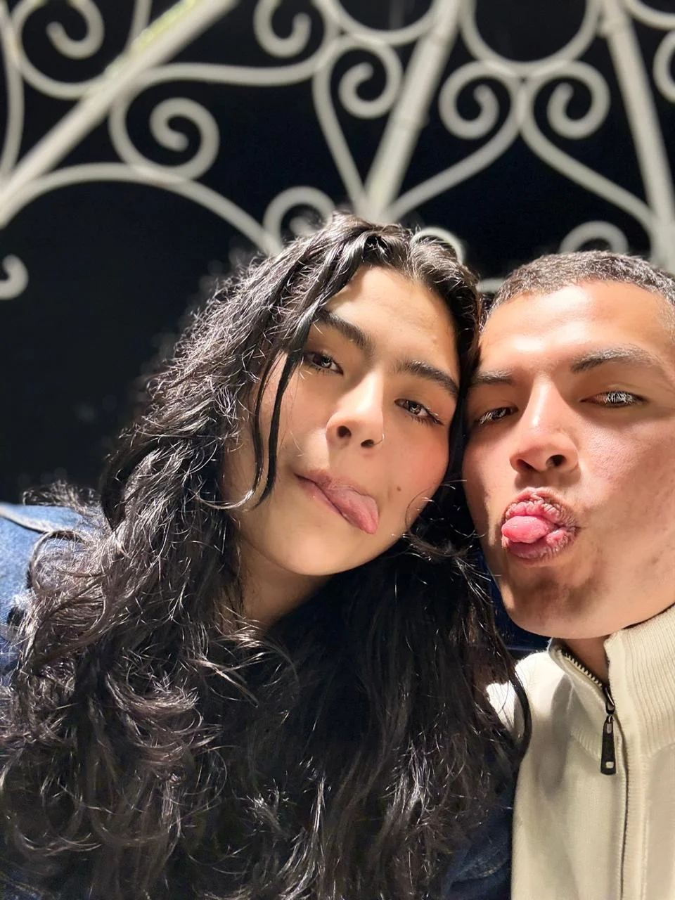
Graduacion
Tu dia mas importante
Recuerdo el día de tu graduación como uno de los momentos más especiales a tu lado. Estaba tan emocionada de acompañarte y
compartir esa cena con tus papás. Gracias por hacerme parte de cada uno de tus logros; no cabe en mí el orgullo que siento
por ti. Celebrar a tu lado y ver todo lo que has construido hizo que ese día fuera inolvidable. Sé que no esperabas nada
especial ese día, pero el solo hecho de estar juntos lo hizo perfecto.
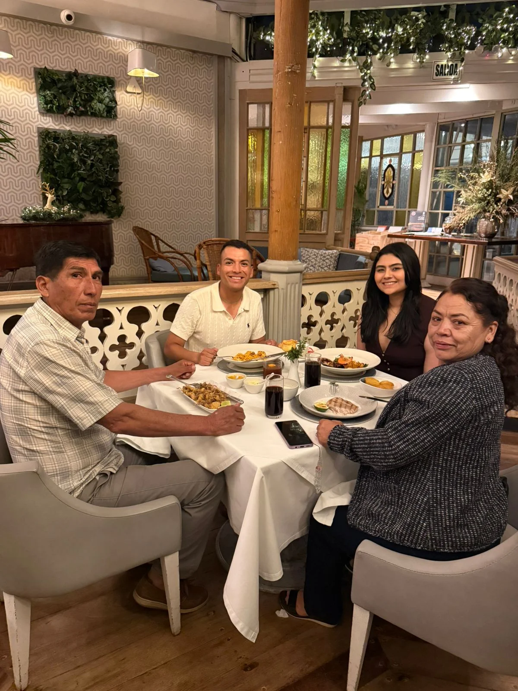
Celebración
Fiesta de Graduacion
Tengo el recuerdo tan presente,cada detalle grabado en el corazón. Cuando me invitaste, apenas comenzábamos a hablar,
y sinceramente no podía ni creérmelo. En ese momento ni siquiera tenía la certeza de la fecha de mi viaje a Perú, pero
cuando el amor y el destino se alinean, los milagros suceden, por obra de Diosito todo encajó a la perfección.
Adelanté mi vuelo, los tiempos cuadraron de una manera casi irreal y fue ahí cuando entendí con el alma que las cosas
verdaderamente pasan por algo: nuestro destino era estar juntos esa noche.
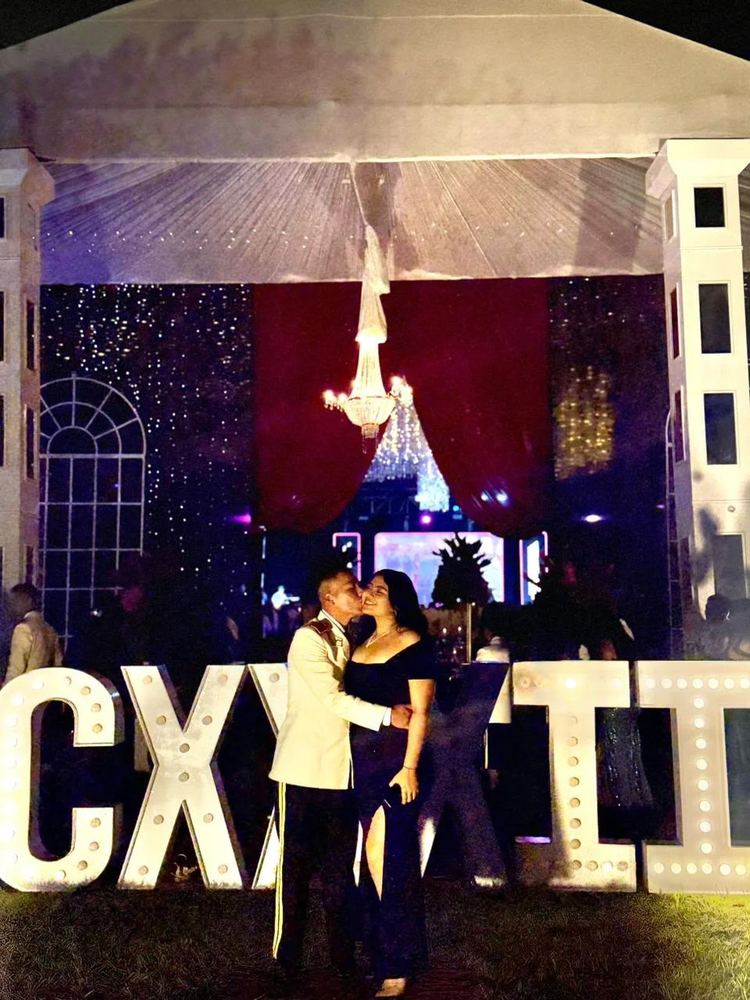
Fiestas
Navidad y Año nuevo
Otro de los momentos más especiales que hemos vivido juntos fue Navidad y Año Nuevo. Jamás imaginé compartir esas fechas
tan íntimas con alguien que no fuera de mi familia, pero, para serte sincera, te convertiste en parte de ella y en mi refugio.
Como olvidar el hermoso collar que me regalaste, o aquella fiesta de Año Nuevo... Cuando estábamos bailando y, con solo mirarte
a los ojos, sentí esa paz y seguridad tan profundas,cuando se nos caían las lágrimas de la emoción, al sentir tanto el uno por el otro.
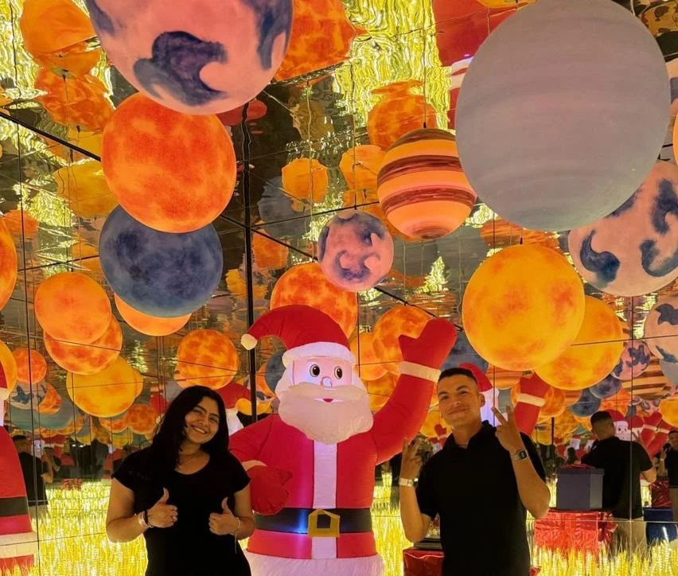
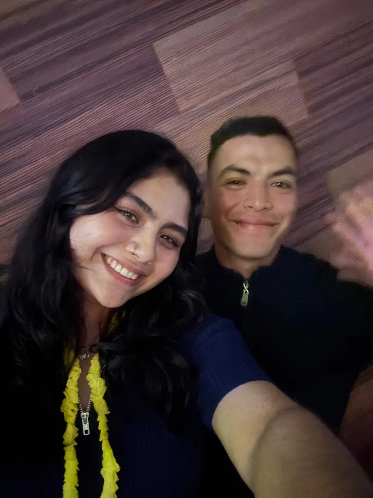
Momento unico
Juegos mecanicos
El día que me diste mi anillo de promesa es otro de los momentos más hermosos e inolvidables que guardo en el alma. Recuerdo claramente
cuando fuimos a los juegos mecánicos; nos subimos a tantos juegos y nos divertimos como nunca. Sinceramente, no me esperaba para nada
la sorpresa que tenías guardada.Fue justo cuando subimos a la rueda de la fortuna y llegamos a lo más alto... Saqué mi teléfono para grabar
ese instante y que quedará registrado como un bonito recuerdo de nuestra cita. Pero al voltearme hacia ti, me encontré con la escena más
hermosa de mi vida: tenías esa cajita abierta y el anillo brillando ahí. Con esa mirada tan tierna y profunda que solo tú tienes, me preguntaste
si quería ser tu enamorada ¡Obviamente te dije que sí! Me invadió una emoción indescriptible mientras me ponías ese anillo, que desde ese
momento se convirtió en mi tesoro más preciado. Entre abrazos, sonrisas y el cielo de fondo, nos dijimos una y otra vez cuánto nos amamos.
Se convirtió en una noche mágica, única e infinitamente especial.
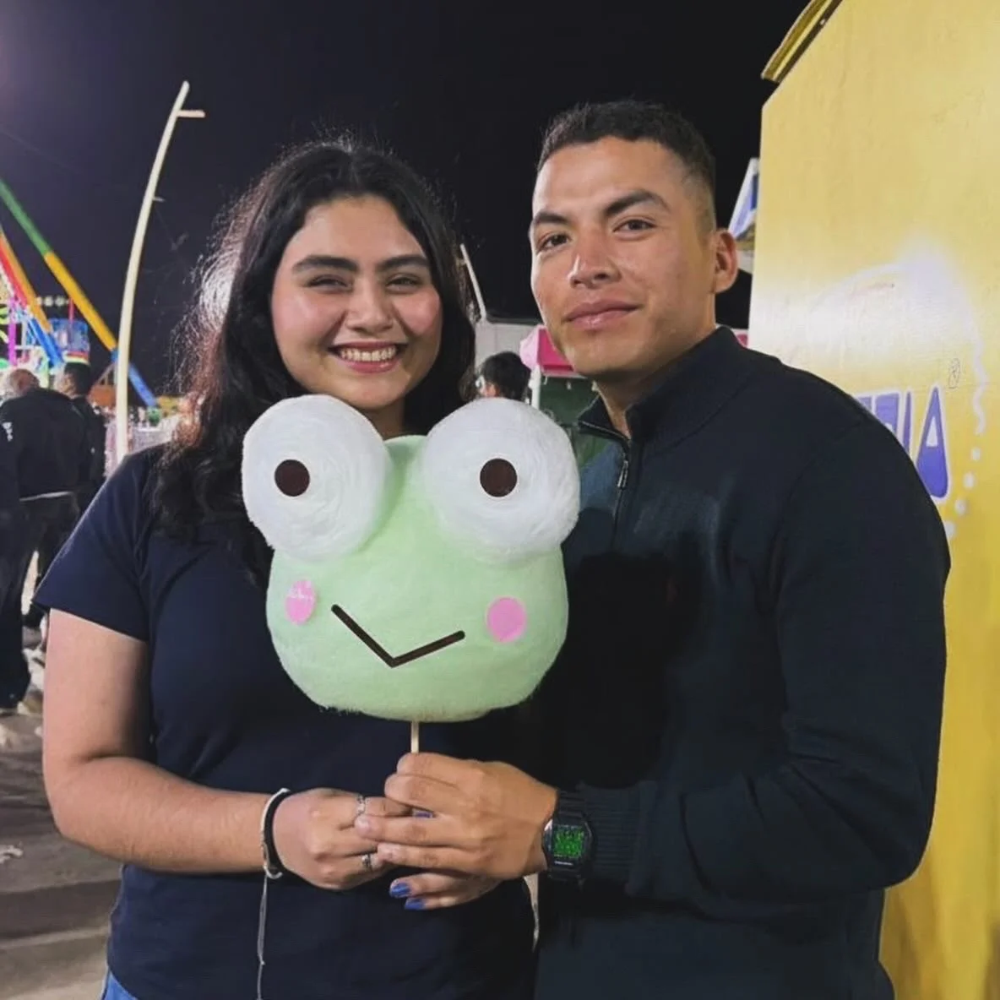
cumpleaños
Mi dia especial
El día de mi cumpleaños no tenía planeado nada extraordinario, solo pensaba salir a pasear con mi hermano. Lo que no me imaginaba era que
tú ya lo tenías absolutamente todo planeado para hacerme feliz.Cuando llegué a casa por la noche, me encontré con la hermosa sorpresa de
ver a mis amigas esperándome, pero dentro de mí solo anhelaba tu llegada. Y de pronto apareciste... ¡con mariachis y con El Patrón! Sabiendo
que no soy de las que le gusta llamar la atención, ese detalle tan grande me demuestra lo mucho que te esfuerzas por sacarme una sonrisa.
Me hiciste sentir como la chica más especial del planeta, tal y como lo haces siempre con cada pequeño gesto.Bailamos, nos reímos a más no
poder y disfrutamos cada segundo. Le agradezco infinitamente al destino por ponerte en mi camino y regalarme el privilegio de tenerte en mi vida.
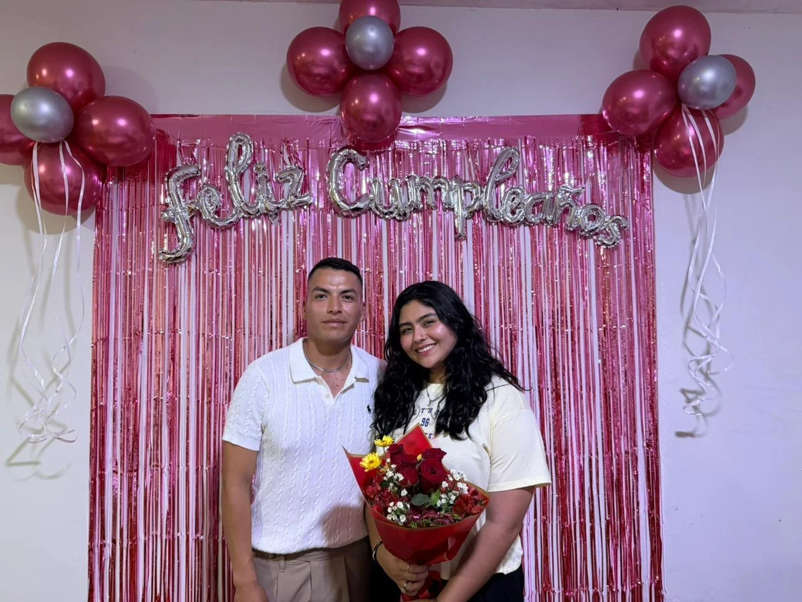
distancia
Nuestra despedida
Porque en nuestra historia no todo ha sido un camino fácil, también nos tocó enfrentar uno de los retos más difíciles, volvernos a despedir.
Dolía, y dolía demasiado. Cuando estábamos juntos nos sentíamos completos, y ver partir a mi otra mitad a otro país o ciudad dejaba un vacío inmenso.
Sé que nuestras mentes se llenaron de dudas, miedos e inseguridades, pero tuvimos esas conversaciones profundas y sinceras, buscando con el
alma el camino perfecto para que esto funcione, sin importar los miles de kilómetros que nos separarán.Recuerdo cómo intentábamos aprovechar
hasta el último segundo juntos: desde ponernos mascarillas, cocinar, ver películas y ver videos en TikTok, hasta el simple y hermoso
gesto de caminar tomados de la mano. Cualquier detalle a tu lado se volvió a algo extraordinario.Hasta que llegó el día en que tenías que partir
primero. Te confieso que no quería ir a despedirte; Me aterraba la idea de que me vieras llorar. Sin embargo, mi corazón no podía permitirse
perder ni un solo instante a tu lado, así que fui. Cuando ya habias subido al autobús, con esa ternura tan única que te caracteriza, saliste
corriendo solo para darme un último y hermoso beso.Aguanté las lágrimas con todas mis fuerzas hasta llegar a casa. Sabía que la distancia sería
difícil por la inmensidad de este amor que siento, pero dentro de mí tengo una sola certeza jamás voy a fallar. Espero y
esperaré con ansias cada reencuentro, porque no me queda duda alguna de que eres el amor de mi vida y no te pienso volver a perder.
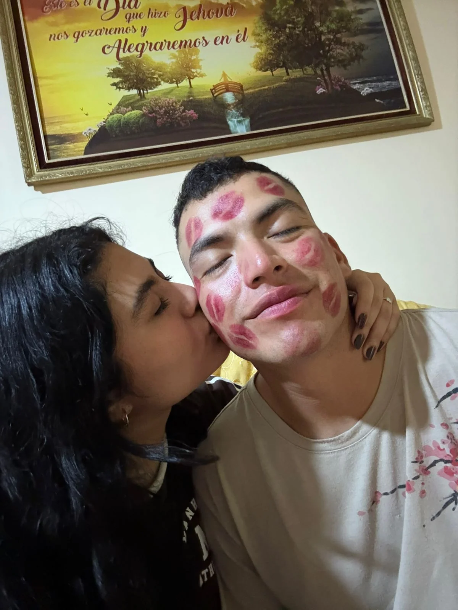
reencuentro 2.0
Recuerdo mas Reciente
El recuerdo más reciente que guardo con tanto cariño fue cuando planeamos todo para reencontrarnos a mitad de año. No te imaginas
las ansias y la ilusión que tenía por ese viaje: por fin iba a estar contigo de nuevo, era todo lo que había estado esperando desde
el día en que nos despedimos. Sin embargo, justo días antes de volar, ocurrió un imprevisto y me fracturé el pie. Sinceramente me
frustré muchísimo en su momento, pero como bien dicen, el tiempo de Dios es perfecto y Él Tenía un plan aún mejor para nosotros.
Lo que iba a ser solo una semana se transformó mágicamente en casi un mes juntos. Es ahí cuando te das cuenta de que las
cosas inesperadas a veces salen mucho mejor de lo que soñamos. Todo volvió a sentirse como aquel hermoso verano: pasamos horas viendo
películas, cenando con tu mamita, saliendo con tus amigos y disfrutando cada instante.Te agradezco con toda el alma el haber estado
a mi lado incondicionalmente en un momento tan difícil, siempre buscando la manera de hacerme sentir feliz y sacarme una sonrisa.
Sin dudarlo ni un solo segundo, eres lo más bonito que ha llegado a mi vida y no me arrepiento de absolutamente nada a tu lado.
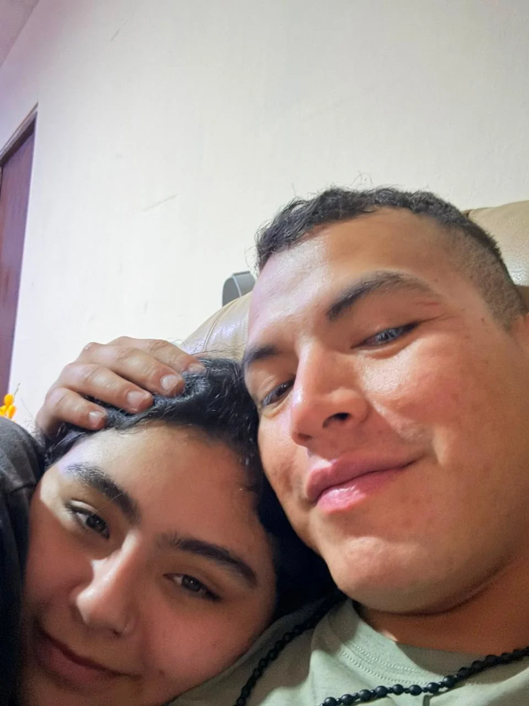